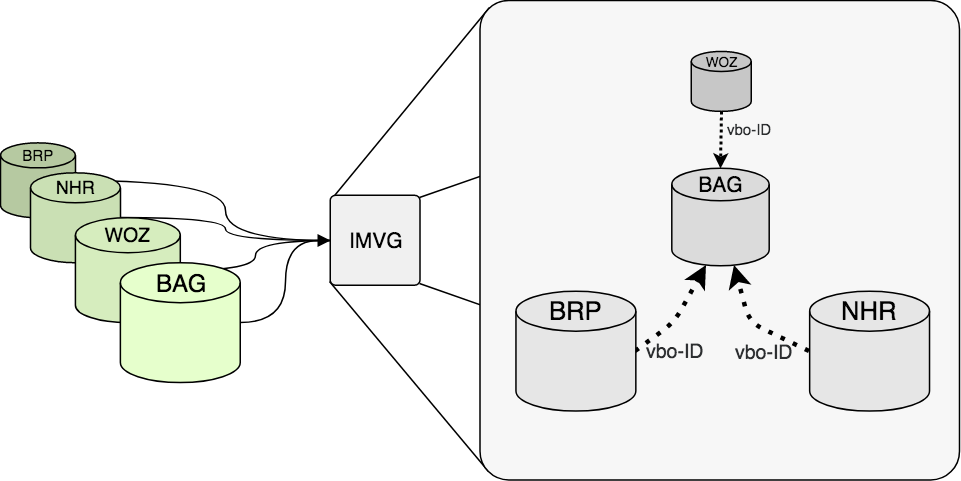
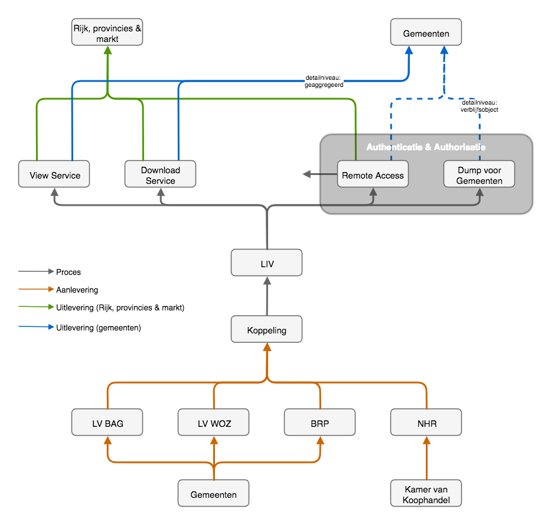
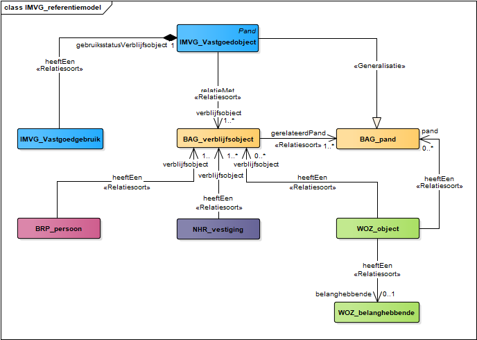
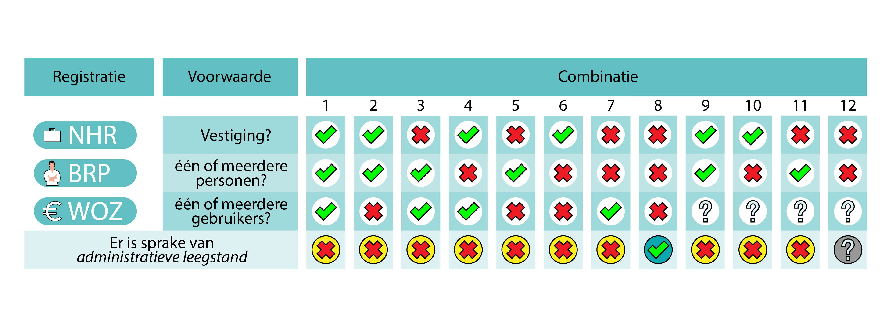
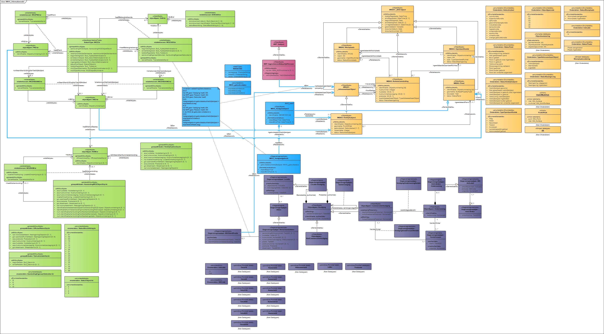

Naamsvermelding-GeenAfgeleideWerken 3.0 Nederland (CC BY-ND 3.0)
Samenvatting
Deze standaard beschrijft de datastructuur van het Informatiemodel Vastgoedgebruik (IMVG).
Status van dit document
Deze paragraaf beschrijft de status van dit document ten tijde van publicatie. Het is mogelijk dat er actuelere versies van dit document bestaan. Een lijst van Geonovum publicaties en de laatste gepubliceerde versie van dit document zijn te vinden op http://www.geonovum.nl/wegwijzer/standaarden
Dit is een door de werkgroep goedgekeurde consultatieversie. Commentaar over dit document kan gestuurd worden naar
geo-standaarden@geonovum.nl.
1. Inleiding en Leeswijzer
In 2015 voerden het Kadaster en Geonovum gezamenlijk onderzoek uit naar behoefte aan leegstandsinformatie bij marktpartijen en overheden. Daaruit bleek een duidelijke behoefte aan een geüniformeerde methodiek en aan eenduidige definities. Het vervolgonderzoek uit 2016 bevestigde dat beeld. Vanuit gebruiksoptiek en vanuit informatiekundig perspectief is het van belang deze methodiek en definities goed vast te leggen in een informatiestandaard.
1.1 Doel
Dit document bevat een dataspecificatie ten behoeve van gegevensontsluiting middels een Informatiemodel Vastgoedgebruik (IMVG). Het IMVG legt de gebruiksstatus en aanvullende relevante kenmerken vast van vastgoedobjecten in Nederland. Deze informatie biedt bijvoorbeeld inzicht in de hoeveelheid leegstaande vastgoedobjecten in een bepaald gebied. Het doel van deze dataproductbeschrijving is om achtergrondinformatie te verstrekken over het dataproduct.
Een dataspecificatie geeft een beschrijving van de gegevensstructuur en de objectdefinities. Op basis van de dataspecificatie kan een eindgebruiker zich een goed beeld vormen van de data die door de dienst en voorziening worden aangeboden en de data inhoudelijk interpreteren. Daarnaast geldt dat de verschillende onderdelen van de dataspecificatie de grondslag zijn voor het bouwen en ontwikkelen van de applicaties. Dit betreft een 0.9 versie ter voorbereiding op de consultatie van de betrokken partijen. Dit document is bedoeld voor de gezamenlijke gedachtenvorming en nog niet voor implementatie.
1.2 Leeswijzer
De dataspecificatie van het IMVG beschrijft het concept-informatiemodel. Deze versie is opgebouwd uit vijf hoofdstukken. Hoofdstuk 2 licht het domein waarop deze dataspecificatie van toepassing is toe. Hoofdstuk 3 geeft een informele beschrijving van dit domein en de toepassing van de dataspecificatie in een informatie- en data-uitwisselingsproces. Verder bevat dit hoofdstuk de normatieve referenties en de lijst met termen, definities en afkortingen. Hoofdstuk 4 vat in tabelvorm de identificatie van de dataspecificatie samen. Hoofdstuk 5 zet het UML-model uiteen en licht het referentiemodel en het informatiemodel toe. Hiertoe behoort ook de objectcatalogus waarin alle modelinforatmmie in tabelvorm is opgenomen.
Voor de implementatie van het informatiemodel is ook een beschrijving nodig van de referentiesystemen, de metadata, de datalevering, de inwinningscodings en eventueel de visualisatie. Deze onderwerpen vallen buiten de scope van het concept-informatiemodel. Deze onderwerpen zijn alvast opgenomen in de hoofdstukstructuur van de dataspecificatie.
Op deze manier geeft het document inzicht in de onderwerpen die voor een implementeerbaar model verder uitgewerkt moeten worden. Hiervoor dienen hoofdstuk 6 tot en met 10.
2. Scope
Dit document beschrijft de dataspecificatie van het Informatiemodel Vastgoedgebruik (IMVG). De dataspecificatie bevat een gedetailleerde uiteenzetting van de structuur, inhoud, data-inwinning en datakwaliteit van het IMVG. Op deze manier dient de dataspecificatie als basis voor de realisatie en ontsluiting van verschillende dataproducten.
De kern van het IMVG bestaat uit de koppeling van een viertal basisregistraties.
Deze koppeling verschaft inzage in de gebruiksstatus van vastgoedobjecten in Nederland. Het informatiemodel gaat voor elk pand met een verblijfsobject (BAG), na of er in één van de andere registraties een gebruiker staat geregistreerd. Stand- en ligplaatsen vallen buiten de scope van de informatievoorziening.
Ook bevatten de registraties aanvullende objectinformatie die de gebruiksstatus van belangrijke context voorziet. Het IMVG neemt ook deze informatie mee en beschrijft op die manier de informatieproducten van de Landelijke Informatievoorziening Vastgoedgebruik (LIV). De LIV bestaat uit de volgende informatieproducten:
Product
Toelichting
Landelijke Leegstandsmonitor
Jaarlijkse publicatie door CBS op gemeenteniveau voor niet-woningen en op gemeente, wijk- en buurtniveau voor woningen
Remote Access
Voorziening bij het CBS voor onderzoek op objectniveau
Teruglevering
levering resultaten door CBS aan gemeenten op objectniveau
3. Overview
3.1 Naam en Acroniemen
IMVG: Dataspecificatie voor vastgoedgebruiksinformatie
Informatiemodel Vastgoedgebruik: Dataspecificatie voor het dataproduct van de Landelijke Informatievoorziening Vastgoedgebruik (LIV)
3.2 Informele beschrijving
3.2.1 Definitie
Voor de definitie van begrippen in het IMVG is ervoor gekozen om steeds zo dicht mogelijk bij de bron te blijven om op die manier de informatie zo precies mogelijk weer te geven. In de praktijk zien we meerdere definities van het begrip leegstand, die soms onderling conflicteren. Het IMVG heeft specifiek betrekking op administratieve leegstand. Deze definitie wijkt af van de feitelijke leegstand.
3.2.2 Beschrijving
Uit verschillende onderzoeken van de provincie Overijssel, CBS, Kadaster en Geonovum in 2015 en 2016, bleek een sterke behoefte bij overheden en marktpartijen aan integrale, uniforme en landsdekkende informatie over vastgoedgebruik. Voor de uitwisseling van informatie over vastgoedobjecten vormt het IMVG het gemeenschappelijke begrippenkader. De totale verzameling van vastgoedobjecten bestaat onder andere uit woningen, winkels, kantoren, scholen, ziekenhuizen, fabrieken en sportfaciliteiten. Dit heet de gebouwenvoorraad en hiertoe behoort al het vastgoed dat is vastgelegd in de BAG. Het IMVG brengt informatie over het gebruik van deze objecten samen.
Het IMVG koppelt de basisregistraties BAG, WOZ, HR en BRP. Indien een object administratief niet in gebruik is, dan is sprake van administratieve leegstand. Niet alle informatie uit deze bronnen is relevant voor het IMVG. Er is een afspraak nodig over welke informatie wel of niet wordt opgenomen in het IMVG. Om die reden is een selectieve en geïntegreerde view gewenst. Een view geeft weer welke objecten, relaties en attributen van een informatiemodel relevant zijn voor een specifiek doel (in dit geval: vastgoedgebruik). Elementen die voor dit doel overbodig zijn, worden weggelaten en indien nodig worden extra elementen toegevoegd. De LIV fungeert als use case voor het IMVG en levert informatie op het domein van vastgoedgebruik. Bovendien richt de LIV zich in eerste instantie op het in beeld brengen van leegstand. Het IMVG volgt die doelstelling.
3.2.3 Toelichting
Het vastgoed in het IMVG omvat alle panden met een verblijfsobject. Het IMVG richt zich in eerste instantie op het vaststellen van de administratieve gebruiksstatus voor deze objecten. Deze eerste versie van het informatiemodel concentreert zich op het deel van de gebouwenvoorraad dat administratief niet in gebruik is, ofwel: het deel dat administratief leegstaat. De koppeling tussen basisregistraties geeft inzicht in het administratieve gebruik op het niveau van een verblijfsobject (BAG).
Om administratief gebruik vast te stellen, koppelt het IMVG de WOZ, HR en BRP aan de BAG. Deze registraties geven een indicatie van de gebruiksstatus van het verblijfsobject. In het IMVG is er sprake van administratieve leegstand op het moment dat er op een verblijfsobject geen registratie is van een gebruiker in de WOZ, een vestiging in het HR en een persoon in de BRP. Daarnaast bevatten sommige registraties relevante extra informatie. In het verlengde van een integrale benadering, ligt een uniforme benadering. Hoewel er verschillende partijen zijn die naar het gebruik van vastgoed kijken en daarover publiceren, is er onderling geen consensus over de methode en de definities. Daarom heeft een brede groep partijen de wens geuit om hierover afspraken te maken. Het IMVG legt deze afspraken op uniforme manier vast.
Integrale benadering
Bestaande informatievoorzieningen richten zich vaak op een specifiek segment van het vastgoed, bijvoorbeeld kantoren of winkels. Ondanks de voordelen die dit heeft voor de marktspecifieke informatiebehoefte, zijn er ook nadelen. Het blijkt lastig om informatie tussen deze voorziening uit te wisselen. Bovendien bestaat niet voor alle typen vastgoed een informatievoorziening. Integraliteit is een belangrijke voorwaarde voor het IMVG. Het informatiemodel beschrijft daarom alle typen vastgoed die voorkomen in de BAG.
Om verschillende redenen bleek het relevant om binnen een bepaald gebied informatie over verschillende vastgoedtypen aan elkaar te kunnen relateren. Gemeenten en provincies zijn bijvoorbeeld verplicht de Ladder Duurzame Verstedelijking toe te passen voor het in kaart brengen van de ruimtebehoefte. Op die manier ligt het belang van integraal inzicht in feite verankerd in een wettelijk basis.
Het gebruik van een pand (zowel vergund als feitelijk) zegt respectievelijk iets over het oorspronkelijke gebruiksdoel en het huidige gebruik. Als iets leegstaat kan het zijn dat het object leegstaat als gevolg van bijvoorbeeld overaanbod voor die specifieke functie (bijv. kantoor), terwijl er aan een andere functie misschien een tekort is (bijv. woning). In zulke gevallen is het relevant om vraag en aanbod van ruimte integraal aan elkaar te relateren.
Vastgoedregistratie: BAG als ruggengraat
In Nederland registreert de overheid "alle met "gebouwen" samenhangende objecten" in de Basisregistratie Adressen en Gebouwen (BAG). Deze objecten zijn afgebakend en voorzien van een unieke aanduiding. De BAG onderscheidt de volgende vier objecten en legt hiervan de gegevens vast: panden, verblijfsobjecten, standplaatsen en ligplaatsen.
Wat opvalt is dat de BAG panden definieert in plaats van gebouwen. Dit komt omdat de definitie van het object "gebouw" onvoldoende aansloot op de gewenste toepassing van een gebouwenregistraties.
De BAG brengt in feite twee samenhangende basisregistraties bij elkaar: de Basisregistratie Adressen (BRA) en de Basisgebouwenregistratie (BGR). Het gegevensmodel van de BGR maakt onderscheid tussen (kleinste) bouwkundige eenheden (panden) en (kleinste) gebruikseenheden (verblijfsobjecten). Hoewel er tussen beide objecten relaties bestaan, bakent de BGR een pand onafhankelijk af van een verblijfsobject. Een verblijfsobject maakt altijd deel uit van één of meerdere panden, maar een pand hoeft geen verblijfsobject te bevatten.
Een verblijfsobject moet volgens de definitie functioneel zelfstandig zijn. Dit heeft belangrijke consequenties voor informatie over vastgoedgebruik. Niet elk pand heeft één (of meerdere) verblijfsobject(en); sommige gebouwen vervullen namelijk een ondersteunende functie voor een ander gebouw
. Deze ongeadresseerde gebouwen of bijgebouwen zijn in een aantal gevallen eveneens relevant voor het in kaart brengen van vastgoedgebruik. Het Kadaster deed onderzoek naar de mogelijkheid leegstand van agrarische bebouwing in beeld te brengen. De huidige versie van het IMVG neemt bijgebouwen niet mee.
Een verblijfsobject in de BAG heeft een gebruiksfunctie. Dit type gebruik wordt ook wel het vergunde gebruik genoemd. Zo is voor elk verblijfsobject tenminste één gebruiksdoel vastgesteld. Het gebruiksdoel leent zich voor een rudimentaire classificatie van verblijfsobjecten. Kortom, het onderscheid naar verblijfsobjecten is op twee manieren relevant voor het Informatiemodel Vastgoedgebruik: [1] om de gebruiksstatus van een (deel van) een vastgoedobject als geheel vast te stellen, en [2] om binnen een vastgoedobject het type gebruik per gebruikseenheid te kunnen onderscheiden.
Dataspecificatie: bronnen
Het IMVG haalt gegevens op uit (delen van) vier bronbestanden (BAG, WOZ, HR en BRP) en koppelt de gegevens aan elkaar op basis van de verblijfsobjectidentificatie (vbo-ID) uit de BAG (zie: figuur 1). Het vbo-ID is één van de authentieke gegevens uit de BAG, die de andere bronnen vanuit de stelselverplichting gebruiken.

Figuur 1- Dataspecificatie IMVG bronnen en producten (klik voor vergroting)
De BAG vormt daarmee het middelpunt van de informatievoorziening. De koppeling vindt plaats op vbo-id (kleinste gebruikseenheid). Daarbij is het pand is als de (kleinste) bouwkundige eenheid een belangrijk object. De wens van gebruikers van de informatievoorziening is om op verblijfsobjectniveau te kunnen zien wat de administratieve gebruiksstatus is binnen het pand. Bovendien blijkt uit een pilot dat bij visualisatie van leegstand op objectniveau het hoge detailniveau en het type geometrie ("Point") van verblijfsobjecten de leesbaarheid bemoeilijkt, waardoor aggregatie naar pandniveau (geometrie: "Polygon") wenselijk is.
Uitgangspunten
Uitgangspunten toegepast bij het modelleren van IMVG:
Beschrijven van het totaalpakket aan informatie dat voorziet in het dataleveringsproces voor de Landelijke Informatievoorziening Vastgoedgebruik (LIV), waaruit de dataproducten Landelijke Leegstandsmonitor, Remote Access Vastgoedgebruik, Ruimtelijke Concentratie Leegtand (methode Woonzorgwijzer) en Datalevering op objectniveau voor Gemeenten zijn afgeleid;
het bevat geen specificatie van de datafunctionaliteiten zelf;
het model vormt het afgestemde begrippenkader voor het domein vastgoedgebruik;
het voorziet in een objectgerichte, gevectoriseerde data-uitwisseling;
het IMVG kan worden toegepast in view en download services;
De toepassing van 3D-informatie staat nog open. Enerzijds omdat dit mogelijk een onderwerp voor de toekomst is. Indien de BAG 3D beschikbaar komt, is het mogelijk relevant om voor panden met meerdere verblijfsobjecten met behulp van hoogte-informatie een meer nauwkeurige locatiebepaling te geven van de ligging van het verblijfsobject. Anderzijds ligt de implementatie ervan buiten de scope van het IMVG: die vindt immers plaats in de basisregistratie(s) waar het IMVG uit put;
het maakt gebruik van bestaande geometrieën en voegt hieraan geen nieuwe geometrie toe. Wel voegt het model extra informatie toe aan de bestaande geometrieën, met als belangrijkste kenmerk de gebruiksstatus van een verblijfsobject;
ook bevat het model temporele informatie. Voor het vaststellen van de gebruiksstatus van een verblijfsobject is bij uitstek relevant dat de koppeling van de informatie gebeurt op basis van de dezelfde peildatum. Bovendien is voor het monitoren van leegstand relevant om over een langere periode de resultaten van meerdere meetmomenten met elkaar te kunnen vergelijken, zodat de ontwikkeling over meerder jaren met elkaar vergeleken kan worden;
het biedt integrale informatie, dat wil zeggen: informatie over alle typen vastgoed;
het biedt uniforme informatie: de indicatie van de gebruiksstatus en andere relevante kenmerken is voor alle typen vastgoed op dezelfde wijze vastgelegd;
het biedt landsdekkende informatie door gebruik te maken van basisregistraties.
Data-uitwisselingsarchitectuur
Het volgende figuur toont de data-uitwisselingsarchitectuur waarvan het IMVG onderdeel uitmaakt. Het figuur illustreert de informatiestroom van bronhouder tot eindproduct, maar is niet normatief voor de implementatie van de voorziening. Het figuur onderscheidt data-uitlevering en data-aanlevering. Data-uitlevering heeft betrekking op het leveren van data aan de uiteindelijke afnemers. Data-aanlevering is de aanlevering van data door bronhouders ten behoeve van de realistie van de tussenproducten of voorzieningen die met die gegevens in staat zijn om eindproducten te realiseren.

Figuur 2- IMVG Data-uitwisselingsarchitectuur (klik voor vergroting)
Voor de BAG, de WOZ en de BRP zijn de gemeenten bronhouder en voor het HR is dat de Kamer van Koophandel. Zij verzamelen en beheren de gegevens in de basisregistraties. Behalve voor de BRP, zijn deze bronnen ontsloten via een landelijke voorziening . De landelijke voorziening levert gegevens aan en koppelt de verschillende bronnen aan elkaar met behulp van het vbo-ID. Op die manier is het mogelijk om per verblijfsobject de administratieve gebruiksstatus vast te stellen. Het resultaat hiervan is de Landelijke Informatievoorziening Vastgoedgebruik (LIV).
De LIV maakt onderscheidt tussen functionaliteiten voor zowel alle overheden als marktpartijen en functionaliteiten die exclusief aan gemeenten toebehoren (zie: figuur 3). Het deel van de voorziening dat geaggregeerde gegevens aanbiedt is openbaar toegankelijk, maar de functionaliteiten met informatie op objectniveau worden via een authenticatie- en authorisatielaag aangeroepen; de gebruiker van de informatie moet zich identificeren en geautoriseerd zijn om over de objectdata te mogen beschikken.
.
naam
type
detailniveau
toegang
wie
Landelijke Leegstandsmonitor
viewer
gemeenten
openbaar
allen
Landelijke Leegstandsmonitor
download
gemeenten
openbaar
allen
Remote Access
download
verblijfsobject
gesloten
toegang CBS
Teruglevering
download
verblijfsobject
gesloten
gemeenten
Figuur 3- Type voorzieningen binnen het dataproduct Landelijke Informatievoorziening Vastgoedgebruik
3.3 Normatieve referenties
De volgende documenten zijn onmisbaar voor de totstandkoming van dit document:
Het doel van een informatiestandaard is om te komen tot een geüniformeerde wijze voor het beschrijven van de semantische inhoud van de registraties. Semantiek heeft betrekking op de betekenis van taal. In een standaard leggen we die betekenis eenduidig vast. Deze wijze van beschrijven gebeurt door middel van deze dataspecificatie. Die beschrijft in detail de data-inhoud van de informatievoorziening en de dataproducten die worden geleverd. Centraal in een hierin staat het informatiemodel. Dit zet de afspraken over begrippen en definities van gegevens binnen een bepaald domein schematisch op een rij. Dit helpt om de uitwisseling van informatie te vereenvoudigen.
3.4.2 Ontwikkeling standaard
In het kader van hergebruik van informatie neemt het Informatiemodel Vastgoedgebruik het stelsel van basisregistraties als vertrekpunt. Ook voor de ontwikkeling van het informatiemodel kan op die manier gebruik gemaakt worden van bijbehorende bestaande datastructuren. Niet alleen zijn deze datastructuren reeds ontwikkeld, vanuit de stelselgedachte zijn ze ook al op elkaar afgestemd.
Figuur 4- gebruikte informatiemodellen voor het IMVG
Om informatiemodellen binnen het overheidsdomein onderling beter op elkaar af te stemmen, hebben VNG Realisatie, Kadaster en Geonovum gezamenlijk het Metamodel voor Informatiemodellering ontwikkeld. Hierin bundelen de drie organisaties hun kennis ten aanzien van informatiemodellering. Het metamodel richt zich op registraties binnen het overheidsdomein, maar is in bredere context inzetbaar.
Waar mogelijk past het IMVG het MIM toe. Maar, het IMVG koppelt bestaande informatiemodellen aan elkaar en sommige informatiemodellen bestonden al vóór het MIM en hanteren een afwijkende UML-notatie. In bepaalde gevallen was het verschil tussen de oorspronkelijke notatie en het MIM te groot. Het IMVG hanteert dan de oorspronkelijke UML-notatie. We zien ook dat binnen één model soms op twee verschillende manieren dezelfde relatie gemodelleerd is. Beide manieren zijn overgenomen. Dit maakt het model wel minder eenduidig.
Knelpunten bij (operationele) uitvoering
Bij de ontwikkeling van het informatiemodel, kwamen er een aantal uitdagingen aan het licht. Van de vier basisregistraties was alleen een informatiemodel van de BAG beschikbaar dat volgens het MIM was gemodelleerd.
Van sommige basisregistraties waren meerdere modellen beschikbaar waarbij niet zonder meer duidelijk was welk model het meest toereikend zou zijn.
Niet van alle modellen was een UML-versie beschikbaar in Enterprice Architect (EA). Van de BAG en WOZ waren deze wel beschikbaar, maar van HR en BRP niet. Het informatiemodel van het HR was wel aanwezig als UML in html-formaat. Officieel is bij de Kamer van Koophandel ook een EA-versie, maar dit model wordt niet met andere partijen gedeeld.
Van de BRP is geen model beschikbaar. De Rijksdienst voor Identiteitsgegevens (beheerder van de BRP) verwees voor de benodigde informatie naar het Logisch Ontwerp BRP; een document in pdf-formaat. Het doel van het logisch ontwerp is niet om de datastructuur van de BRP te specificeren. Desondanks staat er wel relevante informatie in. Via de Referentiemodel Stelsel van Gemeentelijke Basisgegevens (RSGB) is het model van Gemeentelijke Basis Administratie verkregen.
Het BRP registreert naast ingezetenen (GBA) ook niet-ingezetenen (personen in het buitenland). Personen in het buitenland zijn voor het IMVG niet relevant. Het GBA volstaat voor het Informatiemodel Vastgoedgebruik. Het lastige is dat vanuit het GBA in het RSGB geen duidelijke link gelegd wordt met de BAG. In combinatie met het Logisch Ontwerp van de BRP is wel af te leiden waar die verbinding moet liggen.
Deze versie van het WOZ-model is uit 2012. De LIV maakt specifiek gebruik van de Landelijke Voorziening WOZ (LV WOZ). Hoewel er geen grote wijzigingen hebben plaatsgevonden, kan het model op kleine punten afwijken van de huidige situatie. Verder is het UML-model van de WOZ mogelijk vanuit andere software in EA geïmporteerd, want de diagrammen waren zeer moeilijk leesbaar.
In het stelsel zijn de BRP, WOZ en het HR aan de BAG gekoppeld. Het was lastig om die structuur goed uit de modellen terug te lezen omdat er niet op een éénduidige manier werd gerefereerd. Om de modellen op elkaar aan te laten sluiten, moesten daarom keuzes gemaakt worden.
Mogelijke discrepantie IMVG en LIV
Reproduceerbaarheid was vanaf het beging een belangrijk speerpunt van het IMVG en de LIV. Transparantie van de gebruikte methodiek was daarvoor cruciaal. Bij de ontwikkeling van de dataspecificatie bleek er tussen het IMVG en de LIV een discrepantie te zijn ontstaan. De resultaten zijn ook met dit informatiemodel niet volledig te reproduceren omdat het CBS met een hoogwaardige standaadisatie werkt om de bestanden te koppelen, waar geavanceerde IT en voortschrijdend inzicht tot optimale koppelresultaten leiden.
Het CBS heeft voor statistische doeleinden toegang tot de informatie uit de basisregistraties. Voor kwaliteitsdoeleinden maakt het CBS een verbeterslag op de ruwe data uit de basisregistraties. Deze stap gebeurt buiten de directe scope van het IMVG om en geldt als input voor alle CBS-afdelingen die gebruik maken van deze data. Het voordeel is dat de kwaliteit van de broninformatie door deze bewerking toeneemt. Dit heeft echter wel consequenties voor de reproduceerbaarheid van de methodiek.
Een poging om de gemaakte keuzes en gebruikte aanvullende data uit de voorbewerking in beeld te brengen, toonde aan dat dit een complexe stap is. Bovendien was het onduidelijk of van de geprepareerde bronnen een informatiemodel beschikbaar was. In hoeverre en in welke mate dit tot verschillen leidt, is daarom onduidelijk. Wat we wel weten is dat de bewerking op het HR het meest complex is. Op dat punt zullen de verschillen tussen ruwe en bewerkte data het grootst zijn. Om de kwaliteit van de cijfers te verbeteren wordt gebruik gemaakt van informatie uit aanvullende bronnen.
Concluderend: er is voor LIV een pragmatische keuze gemaakt. Eerdere cijfers die in het kader van de LIV door het CBS gepubliceerd zijn, vonden op dezelfde brondata plaats. Bovendien gaat het om een bewerking die de kwaliteit van de cijfers verbetert. Daarom is besloten om hierop voort te bouwen. Deze dataspecificatie sluit zo dicht mogelijk aan bij deze methodiek, maar wijkt op een aantal kleine punten af.
3.5 Termen en Definities
Lijst van termen en definities die in deze beschrijving worden gehanteerd.
activiteit
"De activiteit van een natuurlijk persoon of niet-natuurlijk persoon. Activiteiten worden geregistreerd bij de rechtspersoon of bij de vestigingen. Bij zowel de maatschappelijke activiteit als de onderneming wordt de verzameling van Standaard Bedrijfsindeling (SBI)-codes gegroepeerd.
Maatschappelijke Activiteit: De totale verzameling van SBI-codes die betrekking hebben op de rechtspersoon of op de niet-commerciële vestigingen.
Onderneming: De verzameling van SBI-codes die betrekking hebben op een Onderneming. Dit is de verzameling van alle SBI-codes die worden uitgeoefend op de commerciële vestigingen" (bron: HR 2013).
administratieve leegstand
De situatie waarin de koppeling van de basisregistraties WOZ, HR en BRP aan de BAG respectievelijk: geen gebruiker(s), geen relatie(s) met een vestiging en geen relatie(s) met een persoon oplevert (zie: figuur 8, combinatie 8)
adresseerbaar object
Objecten waaraan in de BAG een adres kan worden toegekend: standplaats, ligplaats of verblijfsobject bron: BAG 2018
annotatie
Elke toevoeging op een kaartbeeld voor verduidelijking
applicatieschema
informatiemodel dat gegevens beschrijft die worden gebruikt door een of meer applicaties. IMKL is met UML beschreven in een applicatieschema.
associatie of relatie (UML)
semantische relatie tussen twee of meer klassen die de connectie tussen hun instanties weergeeft
attribuut
kenmerk van een object
attribuutwaarde (value)
waarde die een attribuut aanneemt
bag-object
"De BAG is opgebouwd uit de volgende soorten objecttypen: woonplaats, openbare ruimte, nummeraanduiding, standplaats, ligplaats, verblijfsobject, pand"
coördinaat
getal in een sequentie van n getallen om de positie van een punt in een n-dimensionale ruimte te bepalen
coördinaatreferentiesysteem
coördinaatsysteem dat aan een object is gerelateerd door een datum.
coördinaatsysteem
set van wiskundige regels voor het toekennen van coördinaten aan punten
datatype
gestructureerde gegevens zonder identiteit
datum
parameter of set van parameters voor het definiëren van het nulpunt, de schaal en de oriëntatie van een
coördinaatsysteem
download service
service that enables copies of spatial data sets, or parts of such sets, to be downloaded and, where
practicable, accessed directly.
INSPIRE
extensie (van informatiemodel)
Een informatiemodel als uitbreiding op een ander informatiemodel
feitelijke leegstand
Een eenduidige definitie ontbreekt. Sectorspecifieke leegstandsdefinities wijken af van de definitie in het IMVG. In het buitengebied ontbreekt bijvoorbeeld een eenduidige relatie tussen administratie leegstand en vrijkomende agrarische bebouwing (VAB); vastgoed dat in de toekomst leeg kan komen te staan. In de commerciële markt gaat het vaak om beschikbaarheid van vastgoed. Als er een object wordt aangeboden voor een nieuwe gebruiker, wordt dat in de commerciële vastgoedmarkten vaak geassocieerd met economische of financiële leegstand. Het object hoeft in dat geval niet zichtbaar leeg te staan. Voor publieke partijen heeft leegstand vaak de associatie met verpaupering en verloedering. Ook hier is de relatie met administratieve leegstand niet eenduidig. Er is derhalve geen objectief kader voor (feitelijke) leegstand.
gebruiker
De (rechts-)persoon die door de gemeente is aangewezen "belanghebbende gebruiker" van het WOZ-object (bron: WOZ 2012).
gebruiksdoel
"Een categorisering van de gebruiksdoelen van het betreffende
verblijfsobject, zoals dit door de overheid als zodanig is
toegestaan" (bron: BAG 2009).
"Het gebruiksdoel zal initieel worden afgeleid uit de bouwkundige gebruiksfunctie conform de categorisering van het Bouwbesluit 2003 zoals deze in de bouwvergunning als zodanig is aangemerkt. Op een later moment kunnen ook door de gemeente geformaliseerde gebruiswijzigingen als basis dienen voor opnamen van een aanvulend gebruiksdoel. Het gebruiksdoel dient niet te worden verward met de planologische bestemming en het feitelijk gebruik". (bron: BAG 2009).
informatie met een directe of indirecte referentie naar een plaats ten opzichte van de aarde (bijvoorbeeld
ten opzichte van het aardoppervlak).Geo-informatie is synoniem aan geografische informatie.
abstractie van een fenomeen in de werkelijkheid dat direct of indirect is geassocieerd met een locatie
relatief ten opzichte van de aarde (bijvoorbeeld ten opzichte van het aardoppervlak)
georeferentie (georeference)
locatie van een ruimtelijk object vastgelegd in een ruimtelijk referentiesysteem
formele definitie van objecten, attributen, relaties en regels in een bepaald domein. Domein is in dit verband: een kennisgebied of activiteit gekarakteriseerd door een
verzameling van concepten en begrippen
instantie (instance, occurrence)
benoemd, identificeerbaar object uit een objectklasse
objectklasse (feature class)
verzameling van objecten met dezelfde eigenschappen
pand
"de kleinste bij de totstandkoming functioneel en bouwkundig-constructief zelfstandige eenheid die direct en duurzaam met de aarde is verbonden en betreedbaar en afsluitbaar is" (bron: BAG 2009).
presentatie van informatie aan mensen
Presentatie van informatie door visualisatie, hoorbaar maken, tastbaar maken (tactiel) of
combinaties hiervan.
productmodel
informatiemodel afgeleid van een ander informatiemodel om de toepassing in een dataproduct te
realiseren
registratie
op nationaal niveau geïdentificeerde en erkende gegevensverzameling
Een basisregistratie is een registratie.
registratiehouder
organisatie verantwoordelijk voor het houden van de registratie
de registratiehouder is de organisatie die unieke objectidentificaties toekent voor
objecten in een registratie
representatie
inhoudelijk vastleggen van de werkelijkheid. Het informatiemodel is een representatie van de werkelijkheid.
ruimtelijk referentiesysteem
model (systeem) voor identificatie van een positie (locatie) in de werkelijkheid. Identificatie van een positie kan door coördinaten (directe locatie) en door geografische
identificatoren (indirecte locatie).
sectormodel
model voor beschrijving van de werkelijkheid binnen het domein van een beleidsveld
temporeel referentiesysteem
Referentiesysteem waarin de tijd is bepaald.
vastgoedgebruik
De situaties waarin een koppeling van de WOZ, het HR en de BRP aan de BAG in tenminste één gebruiker, of één relatie met een vestiging of één relatie met één persoon oplevert (combinatie 1 t/m 7, figuur 8).
vastgoedobject
Een pand met één of meerdere verblijfsobjecten (stand- en ligplaatsen zijn uitgesloten)
vectorformaat
verblijfsobject
"De kleinste binnen één of meer panden gelegen en voor woon-, bedrijfsmatige, of recreatieve doeleinden geschikte eenheid van gebruik die ontsloten wordt via een eigen afsluitbare toegang vanaf de openbare weg, een erf of een gedeelde verkeersruimte, onderwerp kan zijn van goederenrechtelijke rechtshandelingen en in functioneel opzicht zelfstandig is" (bron: BAG 2009).
vestiging
"Een vestiging is een gebouw of complex van gebouwen waar duurzame uitoefening van activiteiten van een onderneming of rechtspersoon plaatsvindt. Een vestiging kent twee verzamelingen:
Een commerciële vestiging
Een niet commerciële vestiging
Een vestiging (commercieel of niet commercieel) wordt geïdentificeerd door het vestigingsnummer" (bron: HR 2013)
view service
service that makes it possible, as a minimum, to display, navigate, zoom in and out, pan or overlay
viewable spatial data sets and to display legend information and any relevant content of metadata.
INSPIRE
waardelijst
lijst van waarden
werkelijkheid
beeld van de echte of hypothetische wereld die alles van belang omvat
4. Identificatie
Dit hoofdstuk beschrijft de identificatie van de dataspecificatie. In onderstaande overzicht is de beschrijvende informatie opgenomen van de dataspecificatie.
IMVG beschrijft de semantiek van de view op de basisregistraties BAG, WOZ, NHR en BRP voor het vaststellen vastgoedgebruik. De BAG bevat de geometrieën van vastgoedobjecten (panden met verblijfsobjecten; stand- en ligplaatsen vallen buiten de scope). Informatie uit de andere basisregistraties kan op die manier gekoppeld worden aan een locatie. De vastgoedobjecten worden getypeerd aan de hand van het gebruiksdoel van het verblijfsobject in de BAG. Het geheel van vastgoedobjecten vormt de vastgoedvoorraad waarvan de administratieve gebruiksstatus wordt beschreven en de directe geografische positie middels coördinaten
De dataspecificatie IMVG heeft betrekking op het Nederlands grondgebied (Europese Deel)
Doel [optioneel]
Doel van dit document is het beschrijven van het Informatiemodel Vastgoedgebruik (IMVG) ten behoeve van de Landelijke Informatievoorziening Vastgoedgebruik (LIV). IMVG is ontwikkeld voor de realisatie van digitaal berichtenverkeer rond het thema vastgoedgebruik en de daarin voorkomende vastgoedobjecten.
Aanvullende informatie [optioneel]
De eerste versie van het IMVG richt zich specifiek op administratieve leegstand, maar biedt aanknopingspunten voor uitbreiding in de toekomst met gebruiksinformatie in het algemeen. Bovendien is het denkbaar dat het IMVG wordt aangevuld met andere bronnen, zoals bijvoorbeeld energieverbruik.
5. Data content en structuur
5.1 Inleiding
Dit hoofdstuk beschrijft de inhoud en structuur van het IMVG met behulp van UML-diagrammen en bijbehorende objectcatalogus.
De verschillende uitwisselingsprocessen BAG, WOZ, NHR en BRP worden alleen in dit document behandeld als ze afwijken van hetgeen in de betreffende eigen documentatie is opgenomen. Het IMVG is opgebouwd uit de volgende onderdelen:
IMVG-Vastgoedgebruik
IMVG-BAG
IMVG-WOZ
IMVG-NHR
IMVG-BRP
Het eerste deel van dit hoofdstuk geeft een algemene beschrijving aan de hand van het referentiemodel IMVG. Vervolgens gaat het hoofdstuk dieper in op de technische details van het informatiemodel. Het eerste gedeelte van dit hoofdstuk bevat de UML-diagrammen van het referentiemodel en het volledige Informatiemodel Vastgoedgebruik. Objecten, attributen, datatypen en relaties tussen objecten beschrijven eenduidig, schematisch en detail de inhoudelijke informatie van het informatiemodel.
Het tweede gedeelte van dit hoofdstuk bevat de objectcatalogus met in tabelvorm dezelfde informatie als in de UML-diagrammen, maar in dit geval met taal beschreven. Alle informatie-elementen zijn daarbij voorzien van definities en waar nodig van een toelichting. De objectcatalogus bevat de gezamenlijke informatie-inhoud van alle onderdelen van het informatiemodel. Met andere woorden: de objectcatalogus maakt dus geen apart onderscheidt tussen de specifieke objecten die toebehoren aan vastgoedgebruik en de objecten uit de bestaande basisregistraties.
5.2 Algemene uitgangspunten
De volgende uitgangspunten lagen ten grondslag aan de modellering van het Informatiemodel Vastgoedgebruik. Hiermee vormden zij de kaders bij het opstellen van het UML-model.
hergebruik van informatie: maak gebruik van basisregistraties; bouw geen volledig nieuw model
transparantie: maak zoveel mogelijk gebruik van openbare bronnen en openbare gegevens
privacy: informatie over vastgoedgebruik moet voldoen aan de voorwaarden die de Wet bescherming persoonsgegevens (Wbp) daaraan stelt
eenduidige definities over typen objecten (bijv. vastgoed) en attributen (oppervlakte) en datatypen (bijv. type metrage: gebruiksoppervlak); sluit hiervoor aan bij bestaande definities (per vastgoedsegment) in de markt
uniforme methodiek voor het vaststellen van gebruik
landsdekkend informatie: alle vastgoed binnen NL
integrale informatie: alle typen vastgoed
vaststellen gebruiksinformatie (administratief)
focus op niet-in-gebruik = leegstand
mogelijkheid om ontwikkelingen in de tijd te kunnen volgen
mogelijkheid om model in toekomst o.b.v. gebruikswensen uit te breiden met view op en/of extra informatie: generiek of met specifieke extensies voor verschillende doelgroepen
5.3 UML-diagrammen
5.3.1 Beschrijving algemeen
Het Informatiemodel Vastgoedgebruik is opgebouwd uit verschillende onderdelen. In de kern bestaat een model uit objecten met attributen en de onderlinge relaties tussen objecten. Maar een model kan nog meer onderdelen (stereotypen) bevatten. Al deze onderdelen zijn gedefinieerd en vastgelegd in het MIM. In onderstaande tabel zijn alle stereotypen opgenomen met hun definitie. Een uitgebreidere toelichting is opgenomen de documentatie die via bovenstaande link beschikbaar is.
Stereotype
Modelelement
Beschrijving
Objecttype
UML-Class
De typering van een groep objecten (in de werkelijkheid) die binnen een domein relevant zijn en als gelijksoortig worden beschouwd.
Attribuutsoort
UML-Property
De typering van gelijksoortige gegevens die voor een objecttype van toepassing is.
Gegevensgroep
UML-Property
Een typering van een groep van gelijksoortige gegevens die voor een objecttype van toepassing is.
Gegevensgroeptype
UML-Class
Een groep van met elkaar samenhangende attribuutsoorten. Een gegevensgroeptype is altijd een type van een gegevensgroep.
Generalisatie
UML-generalization
De typering van het hiërarchische verband tussen een meer generiek object van een objecttype en een meer specifiek object van een ander objecttype waarbij het laatstgenoemde object eigenschappen van het eerstgenoemde object overerft.
Relatiesoort
UML-association
De typering van het structurele verband tussen een object van een objecttype en een (ander) object van een ander (of hetzelfde) objecttype.
Relatieklasse
UML-associationClass
Een relatiesoort met eigenschappen.
Externe koppeling
UML-association
Een associatie waarmee vanuit het perspectief van het eigen informatiemodel een objecttype uit het ‘eigen’ informatiemodel gekoppeld wordt aan een objecttype van een extern informatiemodel. De relatie zelf hoort bij het ‘eigen’ objecttype.
Relatierol
UML-Property
De benaming van de manier waarop een object deelneemt aan een relatie met een ander object.
Referentielijst
UML-Datatype
Een lijst met een opsomming van de mogelijke domeinwaarden van een attribuutsoort, die buiten het model in een externe waardenlijst worden beheerd. De domeinwaarden in de lijst kunnen in de loop van de tijd aangepast, uitgebreid, of verwijderd worden, zonder dat het informatiemodel aangepast wordt (in tegenstelling tot bij een enumeratie).
Referentie element
UML-Property
Een eigenschap van een object in een referentielijst in de vorm van een gegeven.
Enumeratie
UML-enumeration
Een datatype waarvan de mogelijke waarden limitatief zijn opgesomd in een statische lijst.
Enumeratiewaarde
UML-enumerationLiteral
Een gedefinieerde waarde, in de vorm van een eenmalig vastgesteld constant gegeven.
Stereotype «Codelist»
UML-datatype
De definitie van een codelist is gelijk aan de definitie van een referentielijst.
Primitief datatype
UML-PrimitiveType
Een in het eigen model gedefinieerd primitieve datatype. Deze worden wel door de modelleur gecreëerd, met een eigen naam en een eigen definitie (en eigen metagegevens).
Gestructureerd datatype
UML-property
Specifiek benoemd gestructureerd datatype dat de structuur van een gegeven beschrijft, samengesteld uit minimaal twee elementen.
Data element
UML-property
Een onderdeel/element van een Gestructureerd datatype die als type een datatype heeft.
Union
UML-datatype
Gestructureerd datatype, waarmee wordt aangegeven dat er meer dan één mogelijkheid is voor het datatype van een attribuut. Het attribuut zelf krijgt als datatype de union. De union biedt een keuze uit verschillende datatypes, elk afzonderlijk beschreven in een union element.
Union element
UML-property
Een type dat gebruikt kan worden voor het attribuut zoals beschreven in de definitie van Union. Het union element is een onderdeel van een Union, uitgedrukt in een eigenschap (attribute) van een union, die als keuze binnen de Union is gerepresenteerd.
Extern
UML-package
Een groepering van constructies die een externe instantie beheert en beschikbaar stelt aan een informatiemodel en die in het informatiemodel ongewijzigd gebruikt worden.
View
UML-package
Een groepering van objecttypen die gespecificeerd zijn in een extern informatiemodel en vanuit het perspectief van het eigen informatiemodel inzicht geeft welke gegevens van deze objecttypen relevant zijn binnen het eigen informatiemodel.
Id
UML-property
Aanduiding dat de relatiesoort waarop de «id» is gedefinieerd een onderdeel is van de unieke aanduiding van een objecttype.
Constraint
UML-Constraint
Een constraint is een conditie of een beperking, die over een of meerdere modelelementen uit het informatiemodel geldt.
Figuur 5- Gebruikte stereotypen vanuit het MIM
Het IMVG maakt gebruik van het stelsel van basisregistraties (zie: figuur 6). Binnen het IMVG vastgoedgebruik gemodelleerd als de koppeling van de modellen van de basisregistraties WOZ, NHR, BRP aan het model van de BAG. Vanuit deze koppeling ontstaat informatie over het administratieve gebruik. Bovendien bevatten de registraties relevante aanvullende informtie over het object. De volgende paragrafen geven een uitwerking van de verschillende elementen van het IMVG. Eerst volgt een uiteenzetting van de globale structuur aan de hand van het referentiemodel IMVG. Daarop volgt een toelichting op vastgoedgebruik aan de hand van het UML-model van het IMVG.
Figuur 6- Stelsel van Basisregistraties: stelselplaat (klik voor vergroting)
Referentiemodel
Het Informatiemodel Vastgoedgebruik (IMVG) koppelt verschillende basisregistraties aan elkaar (zie: figuur 7). Het doel en de structuur van deze bronnen bepalen in belangrijke mate de afbakening van het begrip vastgoedgebruik. Met andere woorden: het model geeft informatie over de administratieve gebruiksstatus van een verblijfsobject (zie: paragraaf 3.2). Per bron leggen we hieronder kort uit wat de rol is in het informatiemodel. Tot slot volgt een beknopte toelichting op de objecten IMVG_Vastgoedobject en IMVG_Vastgoedgebruik.

Figuur 7- Referentiemodel IMVG (klik voor vergroting)
BAG
Het Informatiemodel Vastgoedgebruik stelt de BAG centraal. Deze basisregistratie bevat alle adressen en geometrieën van gebouwen in Nederland en voorziet ze van een unieke identificatiecode. De andere drie basisregsistraties verwijzen voor locatiegegevens naar de BAG op basis van die identificatiecode. Hierdoor is het mogelijk om informatie uit de andere bronnen rechtstreeks aan een BAG-locatie te koppelen. Dat geeft inzicht in de gebeurtenissen op een locatie; in dit geval het gebruik. Bovendien voorziet de BAG gebouwen van aanvullende informatie, zoals: bouwjaar (pand), gebruiksdoel en oppervlakte (verblijfsobject).
BRP
Woningen vormen het belangrijkste deel van de gebouwenvoorraad, namelijk 80%. De BRP legt van alle inwoners van Nederland het woonadres vast. Hiermee is het mogelijk om te zien of een woning in gebruik is. Heeft een woning tenminste één bewoner, dan bevat het BRP op die locatie een inschrijving. Het BRP verwijst voor het adres naar de BAG. Met andere woorden: koppelt de BAG aan de BRP, dan heeft het BAG-object een gebruiker.
NHR
De overige 20% van de gebouwenvoorraad bestaat uit niet-woningen (kantoren, winkels, scholen, etc.). Voor de aanwezigheid van activiteiten op deze locaties is het Handelsregister raadpleegbaar. Het Handelsregister registreert alle bedrijven, rechtspersonen en andere organisaties die deelnemen aan het economisch verkeer in Nederland. Op een vergelijkbare manier als met het BRP is voor de niet-woningen na te gaan of er op een locatie gebruik is. Vindt er op een locatie tenminste één economische activiteit plaats, dan bevat het NHR op die locatie tenminste één inschrijving. Voor de adresgegevens maakt het register een verwijzing naar de BAG. Daarom is de aanname: koppelt de BAG aan het NHR, dan heeft het BAG-object een gebruiker.
WOZ
Alle gegevens die nodig zijn om de WOZ-waarde te relateren aan zowel een onroerende zaak als aan een belanghebende, zijn ondergebracht in de basisregistratie WOZ. Voor de adressering van een onroerende zaak maakt de WOZ een koppeling met de BAG. Grofweg kent de WOZ twee typen belanghebbenden: een eigenaar of een gebruiker. Een WOZ-object heeft tenminste één eigenaar en geen of meerdere gebruikers. Soms is de eigenaar zelf gebruiker. Maar, als dat niet het geval is, kan het voorkomen dat een WOZ-object wel een eigenaar, maar geen gebruiker heeft.
De basisregistratie WOZ beslaat de totale vastgoedvoorraad (woningen en niet-woningen). Daardoor geeft het extra inzicht in het gebruik van zowel woningen als niet-woningen. Het afleiden van gebruik uit de WOZ, verschilt dus van de manier waarop dat met de BRP en het NHR gebeurt, want daar is de koppeling an sich de indicatie voor gebruik. Overigens komt het voor dat de WOZ geen uitsluitsel geeft óf niet koppelt aan de BAG. Hier houdt de huidige versie van het IMVG nog geen rekening mee.
Vastgoedobject en Vastgoedgebruik
De administratieve gebruiksstatus van een vastgoedobject registreert het IMVG vast met de objecten IMVG_Vastgoedobject en IMVG_Vastgoedgebruik. Niet alle panden in de BAG hebben een relatie met één of meerdere verblijfsobjecten. Het IMVG richt zich op vastgoedobjecten. Dat zijn panden met één of meerdere verblijfsobjecten. Een koppeling van bovenstaande basisregistraties aan het vastgoedobject resulteert in de verschillende voorkomens van vastgoedgebruik van verblijfsobjecten binnen het vastgoedobject (zie: figuur 8). Indien geen van de drie bronnen een indicatie van gebruik geeft, geldt het verblijfsobject als administratief leeg (zie: figuur 8, combinatie 8). In sommige gevallen is de belanghebbende in de WOZ onbekend (zie: figuur 8, combinatie 9 t/m 12). Als dit voorkomt en beide andere registraties geven geen gebruiksindicatie, dan is de gebruiksstatus eveneens onbekend. In de overige gevallen gaat het informatiemodel uit van gebruik (zie: figuur 8, combinatie 1-7).

Figuur 8- Mogelijke combinaties gebruiksstatus IMVG (klik voor vergroting)
5.3.2 Overzicht
Het onderstaand UML-diagram bevat het complete Informatiemodel Vastgoedgebruik, inclusief de relatie met de basisregistraties BAG, WOZ, NHR en BRP. De tabel licht het kleurgebruik in het UML-diagram toe. De volgende paragrafen gaan afzonderlijk in op de verschillende onderdelen vna het diagram. Het IMVG neemt van elke basisregistratie slechts een deel van de inhoud over en voegt daar de specifieke informatie aan toe die nodig is voor de realisatie van de in de scope genoemde processen. Dit heet een view; het IMVG heeft als het ware een eigen 'kijk' op de informatie in de basisregistraties, namelijk vanuit het perspectief van vastgoedgebruik.
Kleur
Uitleg
Groen
Landelijke Voorziening Waarde Onroerende Zaken
Blauw
Informatiemodel Vastgoedgebruik
Oranje
Landelijke Voorziening Basisregistratie Adressen en Gebouwen

Figuur 10- Informatiemodel IMVG (klik voor vergroting)
Objecten, attributen en relaties
Het UML-diagram toont de informatie die nodig is voor de indicatie van administratief vastgoedgebruik. Ook bevat het model alle gegevens uit de basisregistraties BAG, WOZ, NHR en BRP die vastgoedobject van relevante extra kenmerken voorziet (bijv. aantal vierkante meters in gebruik of leegstaand). Daarom zijn in het model ook de relaties met (delen van) deze basisregistraties opgenomen in het model. Aan de linkerkant bevindt zich de IMVG view op het informatiemodel van de LV WOZ (groen). Het deelmodel rechtsboven geeft in de IMVG view op de LV BAG weer (oranje). Rechtsonder toont de IMVG view op de NHR (paars). Het deelmodel middenboven geeft gestalte aan de IMVG view op het BRP/GBA.
De kern van het model, vastgoedgebruik, bevindt zich in het midden van het diagram (blauw). Vastgoedgebruik wordt gegenereerd op het koppelvlak van de vier basisregistraties. Het IMVG-objecttype vastgoedgebruik koppelt de verschillende basisregistraties aan elkaar op basis van het objecttype verblijfsobject uit de BAG. Dat object fungeert in alle basisregistraties als unieke koppelsleutel. Voor de leesbaarheid zijn de datatypen, gegevensgroepen en waardelijsten van de basisregistraties niet het overzicht opgenomen.
Het objecttype vastgoedobject is een specialisatie van het objecttype pand uit de BAG. Het IMVG modelleert specifiek de administratieve gebruiksstatus van panden met één of meer verblijfsobject(en). Het objecttype pand uit de BAG bevat echter ook standplaatsen, ligplaatsen en ongeadresseerde objecten (bijgebouwen). Maar, die typen panden vallen buiten de scope van het informatiemodel. Daarom is het specifieke objecttype vastgoedobject gecreëerd. Via de relaties met verblijfsobject en pand erft het objecttype vastgoedobject de geometrieën en andere attributen uit de BAG. Hierdoor is het mogelijk administratief gebruik (en dus ook leegstand) op gebouwniveau weer te geven op een kaart.
Naast het vastgoedobject is ook het objecttype vastgoedgebruik opgenomen. Dit objecttype heeft als belangrijkste attribuut gebruiksstatusVerblijfsobject. Dit is het centrale gegeven van het informatiemodel. Via dit objecttype worden de registraties aan elkaar gekoppeld. Het heeft daarom een relatie met de verblijfsobjectidentificatie (of adresseerbaarobjectidentificatie indien niet apart gespecificeerd) uit elke registratie. Voor de koppeling met het NHR en het BRP geldt dat wanneer de koppeling met de BAG voor één van deze registraties slaagt (de registratie bevat een relatie met een verblijfsobject in de BAG), is er sprake van gebruik.
De koppeling met de WOZ ziet anders uit. De WOZ heeft per definitie een link met een verblijfsobject in de BAG. Gemeenten wijzen aan wie de belanghebbende eigenaar, de belanghebbende gebruiker of de medebelanghebbende van WOZ-object is. Dit wordt vastgelegd in het attribuut aanduidigingEigenaarGebruiker. Voor vastgoedgebruik is met name relevant of een verblijfobject daadwerkelijk een gebruiker heeft. Koppelt één van de andere registraties niet, maar is er wel een gebruiker in de WOZ bekend, dan is sprake van administratief gebruik. Slechts in het geval waarin via het NHR en BRP geen link kan worden gelegd met de BAG én in de WOZ geen gebruiker wordt gevonden is er sprake van administratieve leegstand. Als er in het NHR en de BRP niks staat geregistreerd op een verblijfsobject en in de WOZ de belanghebbende onbekend is, krijgt ook de gebruiksstatusVerblijfsobject de waarde 'onbekend'. Deze condities zijn weergegeven met het blauwe element contraint note «Pre-condition».
De mogelijke waarden (objectInGebruik of objectStaatLeeg) zijn weergegeven in de waardelijst gebruiksStatus. Naast de relaties met de vier basisregistraties heeft het objecttype vastgoedgebruik ook een relatie met het objecttype vastgoedobject. In principe zou via het verblijfsobject de relatie met het pand gelegd kunnen worden, maar omdat het IMVG specifiek kijkt naar een deelpopulatie (vastgoedobjecten), is een directe relatie gelegd tussen het objecttype vastgoedgebruik en vastgoedobject. Het belang van de keuze komt voort uit de toepassing van de gegevens.
Waardelijsten
Waardelijsten die als datatype «codeList» zijn opgenomen in de IMVG-view op de basisregistraties worden niet in het UML beheerd, maar in externe waardelijsten. Deze waardelijsten behoren toe aan andere bronhouders en worden derhalve niet binnen het IMVG en vallen daarmee buiten de scope van dit model. Meer in het algemeen geldt dat waardelijsten van het type «enumeration» binnen het model zijn opgenomen en dat waardelijsten van het type «codeList» extern worden opgenomen, behalve als ze wel onderdeel uitmaken van het inhoudelijke beheer van het IMVG. Dit gebeurt om twee redenen: [1] omdat de externe modellen deze lijsten zelf niet hebben opgenomen en [2] om het model leesbaar te houden.
Basisattributen voor identificatie
Alle concrete objecttypen en daarmee objecten in een dataset hebben een attribuut voor identificatie. Met deze identificatie kunnen ze uniek geïdentificeerd worden. Het MIM hanteert hiervoor het attribuut Id. Niet alle informatiemodellen waren KKG-compliant in UML beschikbaar. Omdat ervoor gekozen is om bij de modellering van het IMVG de oorspronkelijke modelleringsconcepten in tact te laten, is de identificatie an sich wel gewaarbord, alleen gebeurt dit binnen het model niet op een uniforme manier.
Verder beschikken de objecten in de dataset over verschillende attributen met temporele informatie. Omdat gebruik is gemaakt van verschillende basisregistraties die semantisch (nog) niet op elkaar zijn afgestemd kan de benaming van dit attribuut onderling verschillen. Bovendien is het attribuut binnen sommige registraties generiek (bijv. BAG) en binnen andere registraties specifiek (bijv. NHR). Kortom, de benodigde temporele informatie is binnen de modellen aanwezig, maar niet eenduidig.
5.4 Objectcatalogus
5.4.1 Objecttypen
5.4.1.1 Objecttype 1 - Vastgoedobject
Naam
IMVG_Vastgoedobject
Herkomst
IMVG
Definitie
Een pand met één of meerdere verblijfsobjecten
Herkomst definitie
IMVG
Overzicht Attributen
Attribuutnaam
Definitie
Formaat
Kardinaliteit
identificatie
Identificatiegegevens voor de universeel unieke identificatie van een object
NEN3610ID
1
objectBeginTijd
Tijdstip waarop het object in de registratie is ontstaan
DateTime
1
objectEindTijd
Tijdstip waarop het object in de registratie niet meer geldig is
DateTime
0
Overzicht Relaties
Rolnaam
Definitie
Doelklasse
Kardinaliteit
is specialisatie van
n.v.t.
Pand
n.v.t.
verblijfsobject
n.v.t.
Verblijfsobject
1
vastgoedgebruik
n.v.t.
Vastgoedgebruik
1
5.4.2 Gegevensgroeptypen
5.4.2.1 Gegevensgroeptype 1 - Vastgoedgebruik
Naam
IMVG_Vastgoedgebruik
Herkomst
IMVG
Definitie
De gebruiksstatus van een vastgoedobject
Herkomst definitie
Rapport Landelijke Leegstand 2017
Overzicht Attributen
Attribuutnaam
Definitie
Formaat
Kardinaliteit
gebruiksstatusVerblijfsobject
De aanduiding van het gebruik van een vastgoedobject
IMVG_Gebruiksstatus
1
objectBeginTijd
Tijdstip waarop het object in de registratie is ontstaan
DateTime
1
objectEindTijd
Tijdstip waarop het object in de registratie niet meer geldig is
DateTime
0
Overzicht Relaties
Rolnaam
Definitie
Doelklasse
Kardinaliteit
gebruiksstatusVerblijfsobject
n.v.t.
IMVG_Vastgoedobject
1
5.4.3 Gestructureerd datatype
Gestructureerd datatype IMVG_gebruiksstatus
Naam
NEN3610ID
Herkomst
NEN 3610:2011
Definitie
Identificatiegegevens voor de universeel unieke identificatie van een object
Herkomst definitie
NEN 3610:2011
Overzicht Attributen
Attribuutnaam
Definitie
Formaat
Kardinaliteit
namespace
Unieke verwijzing naar een registratie van objecten
CharacterString
1
lokaalID
Unieke identificatiecode binnen een registratie
CharacterString
1
versie
Versie-aanduiding van een object
CharacterString
0
5.4.4 Enumeraties
Enumeratie IMVG_gebruiksstatus
IMVG_gebruiksstatus
Enumeratiedetails IMVG_gebruiksstatus
Definitie (v/d lijst)
Code
Naam
Definitie (v/d waarde)
n.v.t.
objectstatusInGebruik
voorstel: objectstatus administratief in gebruik
n.v.t.
objectstatusLeeg
voorstel: objectstatus administratief niet in gebruik
n.v.t.
objectstatusOnbekend
voorstel: objectstatus administratief onbekend
6. Referentiesystemen
NOTE: Voor de implementatie van het informatiemodel is ook een beschrijving nodig van de referentiesystemen. Dit onderwerp valt buiten de scope van het concept-informatiemodel. Door het onderwerp al op te nemen in de hoofdstukstructuur, biedt de dataspecificatie een raamwerk voor verdere uitwerking.
6.1 Ruimtelijkreferentiesysteem
6.2 Tijdreferentiesysteem
7. Dataset niveau metadata
NOTE: Voor de implementatie van het informatiemodel is ook een beschrijving nodig van de metadata. Dit onderwerp valt buiten de scope van het concept-informatiemodel. Door het onderwerp al op te nemen in de hoofdstukstructuur, biedt de dataspecificatie een raamwerk voor verdere uitwerking.
7.1 Metadata
8. Levering
NOTE: Voor de implementatie van het informatiemodel is ook een beschrijving nodig van de datalevering. Dit onderwerp valt buiten de scope van het concept-informatiemodel. Door het onderwerp al op te nemen in de hoofdstukstructuur, biedt de dataspecificatie een raamwerk voor verdere uitwerking.
8.1 Leveringsmedium
8.2 Formaten (encodings)
9. Inwinningencodings
NOTE: Voor de implementatie van het informatiemodel is ook een beschrijving nodig van de inwinningscodings. Dit onderwerp valt buiten de scope van het concept-informatiemodel. Door het onderwerp al op te nemen in de hoofdstukstructuur, biedt de dataspecificatie een raamwerk voor verdere uitwerking.
10. Visualisatie
NOTE: Voor de implementatie van het informatiemodel is ook een beschrijving nodig van de visualisatie. Dit onderwerp valt buiten de scope van het concept-informatiemodel. Door het onderwerp al op te nemen in de hoofdstukstructuur, biedt de dataspecificatie een raamwerk voor verdere uitwerking.